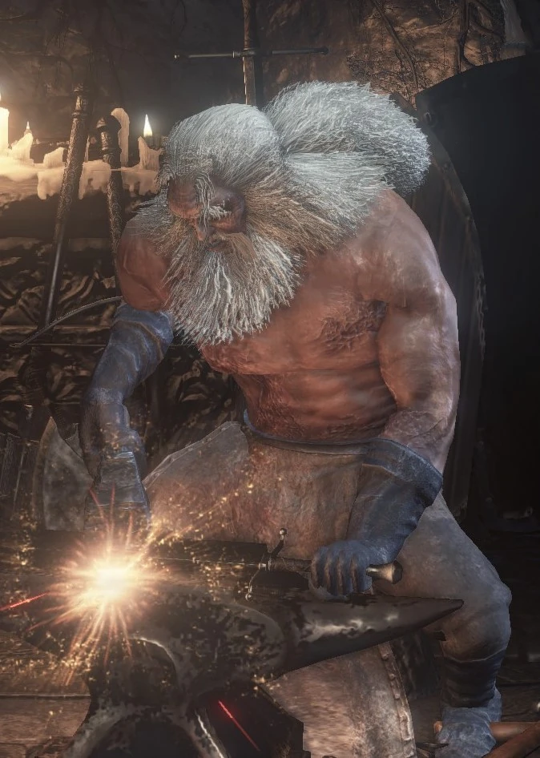

← Volver
← Volver
El Herrero Andre es un NPC de Dark Souls III, ubicado en el Santuario del Enlace de Fuego. Interactuar con él permitirá al jugador mejorar, imbuir y reparar armas, escudos y bastones. Los Fragmentos de Estus desparramados en todo Lothric pueden ser entregados a Andre para incrementar la cantidad de cargas de Estus del jugador (hasta un total de 15). Adicionalmente, Andre permite al jugador ajustar la cantidad de cargas otorgadas a frascos de Estus y de Estus Ceniza.
¿Dónde se puede encontrar a Andre el Herrero en Dark Souls III? En el Santuario del Enlace de la Llama, a través del pasillo donde se encuentra la Sierva del Santuario.
Diálogo del primer encuentro
"Bueno, veo a un recién llegado. Soy Andre, sirvo en este santuario como un humilde herrero forjando nuevas armas. ¿Buscas a los Señores de la Ceniza? Apuesto a que es un viaje arduo. Necesitarás buenas armas. Déjame forjarlas. Soy herrero, ese es mi propósito."
Al seleccionar "salir"
"Por favor, ten cuidado. ¡No quiero ver mi trabajo desperdiciado! (se ríe bonachonamente, como un viejo amigo)."
Al seleccionar "hablar"
"Las armas y la protección son bastante resistentes, en general. Pero con el uso excesivo, acaban rompiéndose. Cuando su durabilidad es baja, es necesario repararlas. Usa polvo o simplemente descansa junto a una hoguera. Pero si por casualidad se rompen, tráemelos. Los martillaré para que vuelvan a su forma. No les gusta romperse, te lo aseguro. Así que trátalos con cuidado, si quieres."
"Hay dos maneras de forjar armas. El refuerzo simple es una, y la infusión, la otra. El refuerzo es sencillo: fortalece un arma sin alterar sus propiedades. La infusión es una forma más avanzada de forja que infunde un elemento. El refuerzo requiere titanita, y la infusión requiere gemas. Trae las piedras y yo me encargo de la forja. ¡ Es mi propósito, después de todo! En la batalla, tus armas son tus únicas aliadas. Fórralas bien y no te decepcionarán."
"Ah, por cierto. Si encuentras algún Fragmento de Estus, tráelo aquí. Sirve para reforzar cualquiera de tus Frascos de Estus. Sin esos frascos, te faltarían para la vida o para concentrarte. Y siempre estarán contigo, ¿por qué no los tratas bien?"
Al hablar acerca de los carbones
"Ah, otro asunto. Infundir armas con gemas requiere un tipo especial de carbón. Mis humildes carbones no servirán para infundir gemas más inusuales. Lo sé, es una pena, pero es todo lo que tengo. Ay, por favor, no me mires así. Aunque no lo creas, soy muy susceptible."
Al entregarle el Carbón de Farron
"¡Ay, Dios mío! Este carbón es de la Legión de los No Muertos... Se usó para forjar las armas de los Vigilantes del Abismo de Farron. Un premio magnífico. Me honra haberlo soportado. Ahora podré infundir gemas especiales. ¡ Alabado sea el cielo! ¡Es hora de usar esta fuerza!"
Al entregarle el Carbón del Sabio
"Vaya, vaya... ¿Qué hace la Legión de los No Muertos con un carbón como este? Oí que uno de los Sabios de Cristal se había aliado con los Vigilantes del Abismo de Farron. Supongo que debe ser cierto. Deberías saber que este carbón está imbuido de magia. Es el primero que veo. No es de extrañar, ¿verdad? Nunca me han gustado los libros ni los sabios."
Al entregarle el Carbón Profanado
"Señores... ¿Dónde encontraron este carbón? Está demasiado oscuro. Veo el Abismo en él... Aun así, sigo siendo herrero. No rechazaré ninguna petición. Pero no lo olviden: su lucha es por la llama y por sus semejantes. Igual que la mía. Puede que sea un destino maldito, pero aún queda esperanza, ¿no es así?"
Al entregarle el Carbón del Gigante
"Vaya, vaya. El carbón de ese gigante pacífico... Parece de hace siglos... Me imagino que murió hace mucho. Echo de menos a ese viejo cabrón, de verdad. Gracias. Me aseguraré de que este carbón se aproveche bien. Forjaré armas nunca antes vistas por gente como tú. Es solo un pequeño favor, para presentar mis humildes respetos."
Al entregarte la Piedra del Torso de Dragón Centelleante
"Oh, has vuelto. Esperaba verte. Ese cabrón de Hawkwood me dio esto. Ha cambiado mucho desde que se fue. Con el rostro serio, me pidió que te lo diera. (hierba espada) Bueno, ahora que esa tarea ha concluido... ¿Qué quieres que te haga hoy?"
Al hablarle luego de que reaparezca tras que lo mataras
"No te pases de la raya, primo. Puedo servirte, pero no soy un esclavo. Tengo asuntos que atender, vete."

 ↑
↑